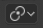

活动元素¶
参考
- 模式
物体模式和编辑模式
- 标题栏

- 快捷键
Alt-Period
活动元素 可以是物体、顶点、边或面。活动元素是最后一个被选中的元素，当在 物体模式 时将以黄色显示活动元素，而在 编辑模式 时显示为为白色。使用 活动元素 作为 轴心点 时，所有变换将相对于活动元素发生。
在物体模式下显示活动元素，其中活动元素(立方体)是黄色。¶
在编辑模式中的顶点、边和面的活动元素以白色显示。¶
在物体模式¶
When in Object Mode, rotation and scaling happen around the origin of the active object. This is shown by the figure to the below where the active object (the cube) remains in the same location (note its position relative to the background grid) while the other objects rotate and scale in relation to the active element.
使用立方体作为活动元素进行旋转和缩放。¶
在编辑模式¶
在 编辑模式 中使用活动元素作为轴心点可能看起来很复杂，但所有可能的变换都遵循一些规则：
轴心点始终在活动元素的中间位置。
变换通过变换所选元素的 顶点 来进行。如果一个未被选择的元素与一个选定的元素共享一个或多个顶点，那么未被选择的元素也将产生一定程度的变换。
让来看看下面的例子：在每种情况下，会看到这两条规则都是适用的。
单一选择¶
当选择一个元素时，它将自动变为活动状态。在下面的图像中，可以看到，当它被变换时，它的顶点会移动，结果是任何与活动元素共享一个或多个顶点的相邻元素也会被变换。
编辑模式，只选定一个元素。¶
让我们回顾一下前面的每个例子：
Faces have their pivot point where the median of their vertices is.
边 在它们的中间有轴心点，它总是在一个边的中点。
A single vertex has no dimensions at all so it cannot show any transformation (except translation, which is not affected by the pivot point).
多个选中项¶
当选择多个元素时, 它们都将进行变换。轴心点停留在上述同一位置。在下面的图片中, 选中元素已被旋转。
编辑模式和多个选中项。¶
For faces the transformation occurs around the median of the vertices of the selected face.
边 也保持相同的行为，使用它们在其中点的轴心点。
There is a case for vertices this time: the active vertex is where the pivot point resides. All other vertices are transformed relative to it.